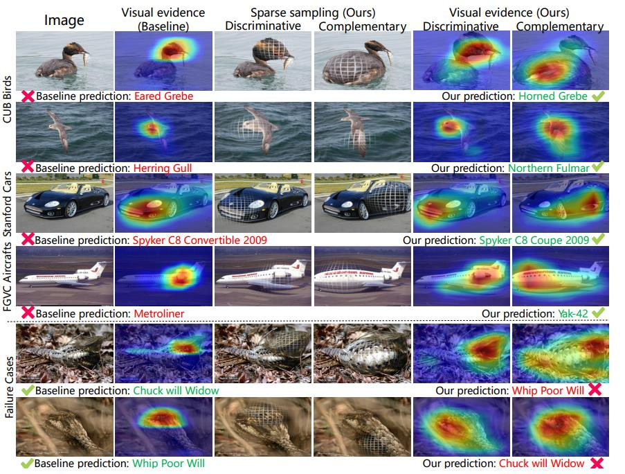

细粒度：S3N¶
综述¶
会议时间：IEEE International Conference on Computer Vision 2019 (ICCV, 2019)
源码地址(PyTorch版本)：https://github.com/Yao-DD/S3N
针对领域：细粒度图像分类(FGVC)
关键词：细粒度识别、显著性采样
主要思想¶
细粒度识别主要用于解决在相当大的类内差异中，捕捉细微的类间差异。传统的方法主要是裁剪局部区域，并且从这些区域中学习详细的特征表示，但是裁剪数量需要人为规定，不同的局部数量可能会带来不同的学习效果，这一超参数不好把控；并且如果直接裁剪的话，会删掉周围的环境，周围环境的缺失会限制网络最终的特征表达能力，再加之如果区域定位出现错误，则会干扰后续的学习过程。
下图是裁剪方法(MA-CNN)与作者提出的方法做的对比：
本文中，作者提出了一种简单有效地网络框架，称为选择性稀疏采样网络(Selective Sparse Sampling Networks, S3Ns)，该网络最核心的地方就是选择性稀疏采样方法，该方法可以捕获并凸显各种各样的细粒度细节，并且保存了上下文信息。首先从类响应图中收集峰值，即局部最大值，用于估计信息感受野，并且利用该峰值计算得到一组稀疏注意力，用于估计峰值响应的规模。然后基于得到的稀疏注意力图，对原图进行非均匀地变换，即选择性采样，以突出响应的区域。最终得到两张重采样图，分别为判别分支图像和互补分支图像，分别引导网络学习图像的区别性特征和互补性特征，显著地提升了特征的表示能力，鼓励网络学习更多的视觉线索。
网络主要流程¶
选择性稀疏采样结构图如下：
原始图像首先得到一张类响应图(Class Response Map)，然后通过计算类响应图的峰值响应点，来得到用于定位信息对象的两组稀疏注意力图(Sparse Attention)，分别用于定位图像具有辨识力的区域(discriminative evidence)和具有互补信息的区域(complementary evidence)。利用上述两种注意力图，来对原图进行稀疏采样操作，得到判别图像和互补图像，判别图像可以提升网络细粒度特征提取的能力，互补图像可以鼓励网络挖掘多个视觉线索(这里的作用类似WS-DAN中的注意力删除操作)，最后三种图像同时用于优化网络参数。
类峰值响应¶
首先将原始图像传入主干特征提取网络CNN进行提取特征，得到尺寸为D×H×W的特征图S，其中D表示特征图的通道数(下面要用到)。之后将特征图依次经过全局平均池化层以及全连接层(FC)，得到一组类别预测概率。假设有C种类别，则全连接层的权重参数W尺寸为D×C(可以这么理解，线性回归中输入D个数，输出C个数，则共有D×C个权重参数)，然后进一步利用下面的公式计算类响应图：
以CUB数据集与resnet50为例，特征图S通道数为2048，即全连接层输入为2048，输出是200，每个输出均是2048个输入的线性组合，以第一类为例，2048张特征图乘以全连接层中指向第一类的权重参数，再求和得到第一类的类响应图，上述公式一共可以得到200张类响应图(对应200类)
第c类的类峰值响应表示其类响应图的局部最大值，可以由窗口尺寸为r的最大池化运算得到，峰值相应点往往代表了感兴趣区域内的强视觉线索。
稀疏注意力¶
由于上述过程得到了C张响应图，各响应图针对不同的类别，具有不同的实际意义，因此不能直接用于计算稀疏注意力，需要加以额外的操作处理，变成一张响应图，最简单地方法就是选择预测概率较大的类别响应图。但作者发现概率最大的类别响应图的峰值响应有时不能完全覆盖有识别力的区域，而前k组类响应图上有很多峰值响应点，但同时也存在一部分噪点。最根本的原因还是由模型预测结果的好坏导致的，如果模型对原图预测的非常好，最大的预测概率很大，则其响应图上的的数据足以反应有识别力的区域，就无需用前k组响应图，反之亦然。因此，作者利用模型预测结果的置信度，来选择第1张类响应图还是前5张类响应图作为最终的响应图。
首先让全连接层的输出经过softmax，得到一组预测概率P，再将预测概率降序排序，利用如下公式计算信息熵值H：
进一步，再利用最值归一化运算将得到的响应图R做归一化处理，公式如下：
响应值较高的区域往往是那些具有辨识力的区域(细粒度种类中独一无二的部分)，集中学习该区域，可以提高网络的细粒度特征提取的能力；响应值较低的区域往往是那些具有互补信息的区域，集中学习该区域，可以鼓励网络学习更多的图像特征表示能力，即提高网络的泛化能力。
最后，再利用高斯核去计算一系列的稀疏注意力A，用于关注峰值响应：
每个稀疏注意力都控制一定的采样尺度(稀疏注意力越大，采样幅度就越大)，并且受到峰值响应值的影响。互补信息区域的峰值响应较小，因此作者通过取倒数，来增加它的采样幅度，以鼓励网络学习特征相对不明显的区域。
选择性采样¶
得到稀疏注意力之后，再利用稀疏注意力得到两张采样图，通过利用采样图对原图进行重采样，从而突出局部区域中的细节，并且保留了上下文信息。两张采样图分别用于判别分支和互补分支，具体生成过程如下：
如果把一般的普通采样看成均衡的采样过程，那么选择性采样就可以看成不均衡的采样过程。将原图X看成一个网格，将网格顶点设置为V，普通的采样相当于在网格上均匀取点，如每个一个点取一个数据，最后经过下采样得到的图像长宽均是原来的一半，并且图像所蕴含的信息分布大体不变；选择性采样也是在网格上取点，但是取点过程受采样图的影响，采样图上的数据越大，则在该区域周围取的点就越多，最后的采样图中，该区域上的信息就越丰富，与利用放大镜放大该区域的效果类似。（具体采样原理见显著性采样笔记）
利用上述得到的采样图可以得到两幅重采样图像，一个对应于采样图Q_d，命名为判别分支图像，用于突出对分类有重要影响的区域；另一个对应于采样图Q_c，命名为互补分支图像，用于突出可能存在微小视觉线索的区域。如图4所示，通过学习两种图像，在提高了网络模型提取区域信息能力的同时，还可以阻止强大的特征控制梯度，去鼓励模型学习更多的图像表示：
传统不带有选择性采样的特征提取网络中，模型的学习容易被强特征所主导，并且不能保留细微特征(如上图第一行，迭代20次后，热图只有一个明显的峰值响应)。本文中的选择性采样平衡了判别分支(特征强的部分)和互补分支(特征相对比较弱的部分)，网络模型具有多元的特征表示能力(如上图第二行，加入选择性采样之后，同样迭代20次，会有两个明显的峰值)
训练流程¶
首先将原图传入特征提取网络中进行提取特征，原始图像的特征图，进一步通过计算得到两个重采样图像，分别为判别图像和互补图像，其大小与输入图像大小相同，然后两张图像再次传入相同的特征提取网络，得到两组特征图。上述共得到三组特征图，分别为原始图像的特征图、判别图像的特征图、互补图像的特征图，分别将其传入全连接层，得到三组分类预测结果，并且最后将三组特征图连接起来，最后传入一个全连接层得到第四组预测结果。
损失函数¶
在训练过程中，整个网络的损失由上述四组预测结果共同计算得到：
最后利用L(X)来优化网络的参数。
实验¶
稀疏注意力分析¶
稀疏注意力最重要的就是定位的能力，只有当峰值响应点正确定位在物体身上才能说明该注意力是有效的。为此，作者筛选了部分图片，将稀疏注意力所关注的关键点可视化了出来，具体如下图右侧所示，每个峰值响应点都落在物体上面，并且包含在对象边界框内部：
作者还进一步统计了CUB数据集中每幅图像的最大和最小稀疏注意力，并且绘制了如下条形图：
从图中可以发现，在CUB数据集中，S3N的判别分支通常对信息丰富的区域进行采样，如”喉部“、”颈背“、”冠部“等作为有力的判断证据，从而给出细粒度鸟类类别的主要决策；而互补分支通常采集信息较弱的区域来提供支持信息(supportive information)，如“翅膀”、“腿”等。
可视化对比¶
为了进一步证明稀疏注意力的有效性，作者将S3N与ResNet50中间输出的特征图做了可视化对比。如下图前四行所示，基线模型大多只能观察到一小部分区域，不能很好地结合对象整体区域进行决策（有点类似过拟合），而S3N可以将对象的大部分区域作为判断依据，通过考虑物体的整体特征来做出更加准确的预测。但后两行展示了S3N分类失败的例子，作者推测可能是背景与目标相似时，互补分支所学的特征对于分类决策没有用处（甚至有害）。

精度对比¶
总结¶
S3N核心思想就是利用图像分类网络学习到的类峰值响应来估计细粒度图像的信息区域，再利用该区域指导对原图的选择性采样过程，从而突出图像中的细节并且不丢失周围的上下文信息。通过将重采样后的图像再次传入相同的特征提取网络中，来更新所学习的类峰值响应。该网络提出了两种采样分支，一种是对图像峰值响应点中响应值较高的局部区域进行采样(判别分支)，通过凸显图像具有区分性的视觉信息，从而提高网络特征提取的能力；另一种是对图像峰值响应点中响应值较低的全局区域进行采样(互补分支)，通过凸显图像中差异小的区域，让网络探索图像中的微小差异，鼓励网络挖掘其他的视觉线索，从而提高网络多元特征表示的能力。上述两个分支是相辅相成的，在提高网络识别精度的同时还提高了网络模型的泛化能力，提高了识别分类的稳定性。
并且在训练过程中，用于划分判别区域和互补区域的阈值是在0-1的均匀分部内随机选取的，并不是固定地选取某一个值当做划分阈值，因此，两个分支的划分具有动态性，两个稀疏注意力关注区域的数量是动态变化的，为模型的训练引入了一定的随机成分，可以进一步提高网络模型的泛化能力，提高稳定性。
注：以上仅是笔者的个人见解，若有错误，欢迎大家批评指正。
初步完稿：2021年11月6日，最后一次修改：2022年3月23日